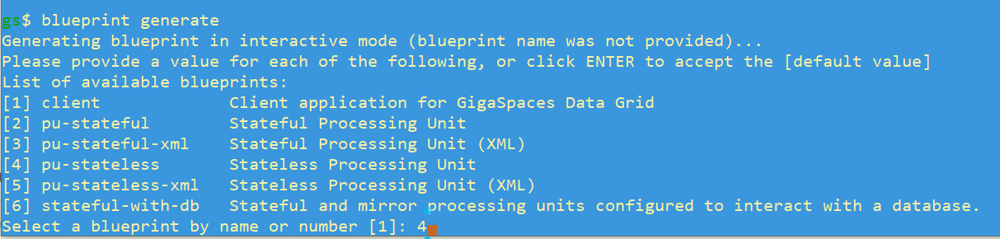

Building a Java Application
We will build a Java application from one of the built-in blueprints available in the gs.bat/sh procedure.
The blueprint we are using, option 4 in the procedure, is creating a stateless Processing Unit.
-
Type
blueprint generate. This begins the configuration work flow. - A list of available blueprints is displayed. Press 4 to select the blueprint for a stateless PU.
 - Choose the default target path (my-pu-state;ess) and "n" to take all of the other defaults..

-
The project is created, and the target path is displayed. You are prompted to open the project in your default file explorer. Choose "y" to see the project tree.

Type quit to exec the gs procedure.
Switch to the my-pu-stateless directory, and enter the maven command to build the project:
Create a Docker Image
Create a docker file named Dockerfile, with the following content:
FROM gigaspaces/xap-enterprise:16.2.0-m22-wed-19
ADD my-pu-stateless-0.1.jar /opt/gigaspaces/tools/custom-pu/my-pu-stateless-0.1.jar
ENTRYPOINT ["/opt/entrypoint.sh"]
CMD ["host", "run-agent", "--auto"]
Create a file named entrypoint.sh, with the following content:
#!/bin/bash
if [ -z "$GS_MANAGER_SERVERS" ]; then
if [ -z "$GS_PUBLIC_HOST" ]; then
export GS_MANAGER_SERVERS=$HOSTNAME
else
export GS_MANAGER_SERVERS=$GS_PUBLIC_HOST
fi
fi
/opt/gigaspaces/bin/gs.sh $*
Perform a Docker build operation, with the jar file and the entrypoint.sh file in the same directory. This will create a Docker image.
Docker build -t my-pu-stateless .Deploy the Docker image in GigaSpaces.
helm install custom-pu ./xap-pu/ --set manager.name=xap,\
resourceUrl=../tools/custom-pu/my-pu-stateless-0.1.jar,\
livenessProbe.enabled=false,readinessProbe.enabled=false,metrics.enabled=false,\
image.repository=my-pu-stateless,image.tag=latest